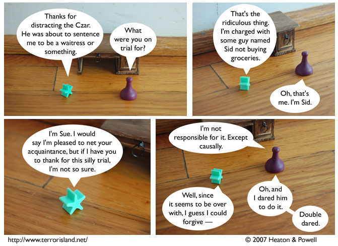

Strip #215
— Friday, October 26, 2007
Stephen thought about taking the physical challenge, but it would have been purchasing groceries.
Notes, Thoughts, &c.
Ben’s Notes
Yay, it’s another new character! We’re going to keep this up until I run out of shelves to store them on. Or until nobody can keep track of who’s in the strip anymore. Whichever comes last.
Lewis’s Notes
If you ever want to read a good novel written in the second person, I recommend Italo Calvino’s “If on a Winter’s Night A Traveler.”